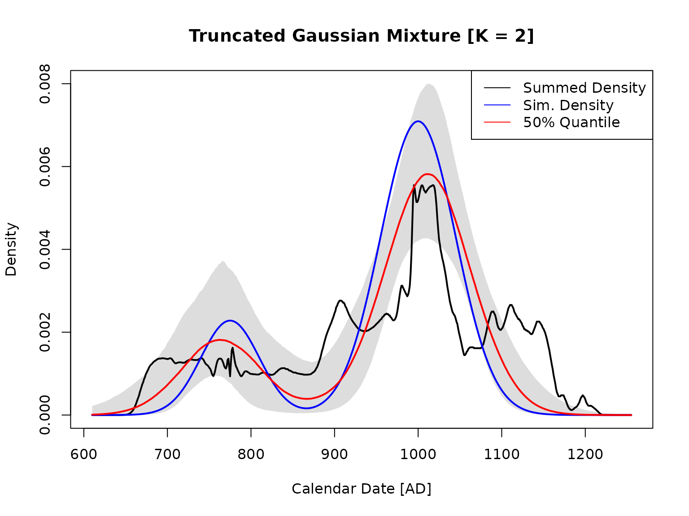
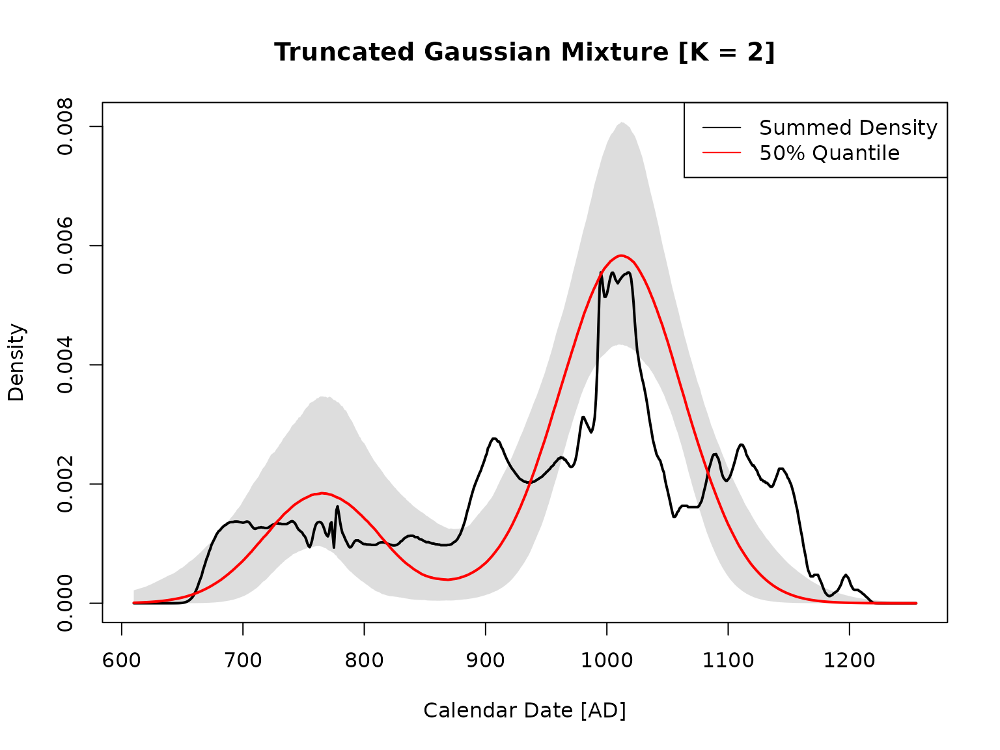

vignettes/standard_pipeline.Rmd
standard_pipeline.Rmdbaydem is an R package for doing end-to-end inference on radiocarbon dates in order to summarize their distribution across time. The majority of analyses involve the same exact steps, so baydem provides an easy-to-use standard pipeline for doing a typical analysis. The standard pipeline differs slightly when running a simulation as opposed to running using existing data saved in a .csv file. The next section describes the standard pipeline for a simulation and the following section describes the standard pipeline using existing data. There are two key variables that are used by all the standard pipeline functions: data_dir and analysis_name. data_dir is a directory in which to store analysis data. analysis_name is a unique name for a given analysis in data_dir. Multiple analyses can be stored in data_dir. For this vignette, we will use the working directory to store data:
data_dir <- getwd()This section of the vignette describes the standard pipeline for a simulation, which consists of:
In order to demonstrate the steps, we need a starting .csv file containing radiocarbon measurements. Create such a file from simulated data. In practice, the user will create the file from real radiocarbon measurements.
# Load baydem
library(baydem)
#> Loading required package: magrittr
# Simulate data with a truncated Gaussian mixture for the density model. For
# details on this step (for example, on the error_spec), see the documentation
# for simulate_rc_data. Make N=100 simulated samples.
# The simulation parameter vector (un-truncated) with K=2 mixtures components.
# pi1/pi2 are the mixture proportions, mu1/mu2 the mixture means (in years AD,
# not BP), and s1/s2 the mixture standard deviations (in years).
th_sim <-
c(
pi1 = 0.2,
pi2 = 0.8,
mu1 = 775,
mu2 = 1000,
s1 = 35,
s2 = 45
)
sim <- simulate_rc_data(
list(
model_spec = list(density_type="trunc_gauss_mix",
th=c(th_sim,600,1300),
error_spec=list(
type="unif_fm",
min=.0021,
max=.0028
),
is_AD=T
),
N=100,
calib_curve="intcal20",
seed=1002
)
)Before setting the simulated data (and if necessary), delete the analysis file that set_sim will create (otherwise, an error will be thrown).
sim_save_file <- file.path(data_dir, "sim_example.rds")
if (file.exists(sim_save_file)) {
success <- file.remove(sim_save_file)
}Set the analysis name and call set_sim.
analysis_name <- "sim_example"
set_sim(data_dir,analysis_name,sim)set_sim saves an R list object to the file sim_example.rds with three named elements:
rc_meas contains the radiocarbon measurements (see the documentation for import_rc_data), calib_df contains the calibration curve information (see the documentation for load_calib_curve), and sim is the sim object that was input.
Call calc_tau_range to determine the range of calendar dates that span the radiocarbon measurements.
tau_range <- calc_tau_range(analysis$rc_meas,
calibration_curve="intcal20",
dtau=5)tau_range is a list with tau_min and tau_max (the minimum maximum calendar dates). By setting dtau to 5, the ranges are specified to multiples of 5 years (using floor for the minimum and ceiling for the maximum), which is the spacing of the IntCal20 calibration curve.
print(tau_range)
#> $tau_min
#> [1] 610
#>
#> $tau_max
#> [1] 1255Use set_density_model to set the parametric model to be used for Bayesian inference. Currently, baydem only supports a truncated Gaussian mixture, though other parameteric models will likely be added in the future. The truncation limits were calculated in the preceding step. Although we know that the simulated data were made with \(K=2\) mixtures components, with non-simulated data one does not know ahead of time how many mixture components to use. By setting \(K\) to a vector with 2, 3, and 4 mixture components at the next step, Bayesian inference will be done for each number of mixture components below.
density_model <- list(type="trunc_gauss_mix",
tau_min=tau_range$tau_min,
tau_max=tau_range$tau_max,
K=2:4)
set_density_model(data_dir,analysis_name,density_model)“sim_example.rds” now contains the density model:
Call do_bayesian_inference to do Bayesian inference (using sample_theta) for each of the number of mixture components specified in the preceding step (2, 3, and 4). The hyperparameters (hp) specify the prior probabilities for the parameter vector, as well as the spacing to use for the sampling grid, which is used in the Riemann sum that approximates the integral required for the likelihood calculation. Unlike with using an existing dataset, for simulations it is uncessary to use set_calib_curve since the calibration curve was already set in the Step 1 above. do_bayesian_inference will probably take between 10 and 20 minutes to finish.
hp <-
list(
# Parameter for the dirichlet draw of the mixture probabilities
alpha_d = 1,
# The gamma distribution shape parameter for sigma
alpha_s = 10,
# The gamma distribution rate parameter for sigma, yielding a mode of 50
alpha_r = (10 - 1) / 50,
# Spacing for the measurement matrix (years)
dtau = 1
)
do_bayesian_inference(data_dir,analysis_name,hp)
#> Warning in readLines(file, warn = TRUE): incomplete final line found on '/tmp/
#> RtmpvLJVty/temp_libpath1d77594e9ae3/baydem/stan/gaussmix.stan'
#> Warning: Relative effective sample sizes ('r_eff' argument) not specified.
#> For models fit with MCMC, the reported PSIS effective sample sizes and
#> MCSE estimates will be over-optimistic.
#> Warning in readLines(file, warn = TRUE): incomplete final line found on '/tmp/
#> RtmpvLJVty/temp_libpath1d77594e9ae3/baydem/stan/gaussmix.stan'
#> Warning: There were 322 divergent transitions after warmup. See
#> http://mc-stan.org/misc/warnings.html#divergent-transitions-after-warmup
#> to find out why this is a problem and how to eliminate them.
#> Warning: Examine the pairs() plot to diagnose sampling problems
#> Warning: The largest R-hat is 1.07, indicating chains have not mixed.
#> Running the chains for more iterations may help. See
#> http://mc-stan.org/misc/warnings.html#r-hat
#> Warning: Bulk Effective Samples Size (ESS) is too low, indicating posterior means and medians may be unreliable.
#> Running the chains for more iterations may help. See
#> http://mc-stan.org/misc/warnings.html#bulk-ess
#> Warning: Tail Effective Samples Size (ESS) is too low, indicating posterior variances and tail quantiles may be unreliable.
#> Running the chains for more iterations may help. See
#> http://mc-stan.org/misc/warnings.html#tail-ess
#> Warning: Relative effective sample sizes ('r_eff' argument) not specified.
#> For models fit with MCMC, the reported PSIS effective sample sizes and
#> MCSE estimates will be over-optimistic.
#> Warning in readLines(file, warn = TRUE): incomplete final line found on '/tmp/
#> RtmpvLJVty/temp_libpath1d77594e9ae3/baydem/stan/gaussmix.stan'
#> Warning: There were 577 divergent transitions after warmup. See
#> http://mc-stan.org/misc/warnings.html#divergent-transitions-after-warmup
#> to find out why this is a problem and how to eliminate them.
#> Warning: Examine the pairs() plot to diagnose sampling problems
#> Warning: Tail Effective Samples Size (ESS) is too low, indicating posterior variances and tail quantiles may be unreliable.
#> Running the chains for more iterations may help. See
#> http://mc-stan.org/misc/warnings.html#tail-ess
#> Warning: Relative effective sample sizes ('r_eff' argument) not specified.
#> For models fit with MCMC, the reported PSIS effective sample sizes and
#> MCSE estimates will be over-optimistic.“sim_example.rds” now contains the Bayesian inference information:
Call do_bayesian_summary to calculate summary information for the best model from the preceding step. The best model is the one with the highest loo value (PSIS-LOO CV; see Vehtari at al. (2017) – “Practical Bayesian model evaluation using leave-one-out cross-validation and WAIC”, as well as the documentation for the R package loo) among the different models with different numbers of mixture components (2, 3, and 4).
do_bayesian_summary(data_dir,analysis_name)“sim_example.rds” now contains the Bayesian summary information:
Call plot_best_solution to plot the best solution (best loo). Since this is a simulation, a known density can be added, so use add_known_density=TRUE.
plot_best_solution(data_dir,analysis_name,add_known_density=TRUE)
This section of the vignette describes the standard pipeline for an analysis that starts with radiocarbon measurements stored in a .csv file. First, write the simulated data already created to a .csv file. This creates the type of file that will typically be input for an analysis, albeit from simulated data. In practice, the user will create the file from real radiocarbon measurements.
output_df <- data.frame(rc_year_bp=sim$data$rc_meas$trc_m,
rc_year_bp_error=sim$data$rc_meas$sig_trc_m)
print(head(output_df))
#> rc_year_bp rc_year_bp_error
#> 1 926.7154 23.02142
#> 2 941.7268 24.55357
#> 3 1041.9077 23.75666
#> 4 1147.4496 23.90028
#> 5 1070.8016 21.96978
#> 6 1095.6019 19.45936
write.csv(output_df, "rc_data.csv", row.names=FALSE)Load the radiocarbon data using import_rc_data. Since the first column of the .csv file contains the radiocarbon year values (years before present in radiocarbon years) and the second column contains the corresponding uncertanties, column names do not need to be specified. If the pertinent data are in different columns, see the documentation for import_rc_data for alternative ways to load the radicarbon data.
Before setting the radiocarbon data data (and if necessary), delete the analysis file that set_rc_data will create (otherwise, an error will be thrown).
rc_save_file <- file.path(data_dir, "rc_example.rds")
if (file.exists(rc_save_file)) {
success <- file.remove(rc_save_file)
}Next, call set_rc_meas.
analysis_name <- "rc_example"
set_rc_meas(data_dir,analysis_name,rc_meas)After setting the radiocarbon measurments, the analysis file contains a list with one named element, rc_meas (the radiocarbon measurements):
Call calc_tau_range to determine the range of calendar dates that span the radiocarbon measurements.
tau_range <- calc_tau_range(analysis$rc_meas,
calibration_curve="intcal20",
dtau=5)Use set_density_model to set the parametric model to be used for Bayesian inference. This step is identical to that for a simulation (see above).
density_model <- list(type="trunc_gauss_mix",
tau_min=tau_range$tau_min,
tau_max=tau_range$tau_max,
K=2:4)
set_density_model(data_dir,analysis_name,density_model)“rc_example.rds” now contains the density model:
Use set_calib_curve to set the calibration curve. The third input can be either the name of a calibration curve or a data frame that specifies the calibration curve (see load_calib_curve for details on the options and formats).
set_calib_curve(data_dir,analysis_name,"intcal20")“rc_example.rds” now contains the calibration data frame:
Call do_bayesian_inference to do Bayesian inference (using sample_theta). This step is identical to that for a simulation (see above).
hp <-
list(
# Parameter for the dirichlet draw of the mixture probabilities
alpha_d = 1,
# The gamma distribution shape parameter for sigma
alpha_s = 10,
# The gamma distribution rate parameter for sigma, yielding a mode of 50
alpha_r = (10 - 1) / 50,
# Spacing for the measurement matrix (years)
dtau = 1
)
do_bayesian_inference(data_dir,analysis_name,hp)
#> Warning in readLines(file, warn = TRUE): incomplete final line found on '/tmp/
#> RtmpvLJVty/temp_libpath1d77594e9ae3/baydem/stan/gaussmix.stan'
#> Warning: Relative effective sample sizes ('r_eff' argument) not specified.
#> For models fit with MCMC, the reported PSIS effective sample sizes and
#> MCSE estimates will be over-optimistic.
#> Warning in readLines(file, warn = TRUE): incomplete final line found on '/tmp/
#> RtmpvLJVty/temp_libpath1d77594e9ae3/baydem/stan/gaussmix.stan'
#> Warning: There were 593 divergent transitions after warmup. See
#> http://mc-stan.org/misc/warnings.html#divergent-transitions-after-warmup
#> to find out why this is a problem and how to eliminate them.
#> Warning: Examine the pairs() plot to diagnose sampling problems
#> Warning: The largest R-hat is 1.35, indicating chains have not mixed.
#> Running the chains for more iterations may help. See
#> http://mc-stan.org/misc/warnings.html#r-hat
#> Warning: Bulk Effective Samples Size (ESS) is too low, indicating posterior means and medians may be unreliable.
#> Running the chains for more iterations may help. See
#> http://mc-stan.org/misc/warnings.html#bulk-ess
#> Warning: Tail Effective Samples Size (ESS) is too low, indicating posterior variances and tail quantiles may be unreliable.
#> Running the chains for more iterations may help. See
#> http://mc-stan.org/misc/warnings.html#tail-ess
#> Warning: Relative effective sample sizes ('r_eff' argument) not specified.
#> For models fit with MCMC, the reported PSIS effective sample sizes and
#> MCSE estimates will be over-optimistic.
#> Warning in readLines(file, warn = TRUE): incomplete final line found on '/tmp/
#> RtmpvLJVty/temp_libpath1d77594e9ae3/baydem/stan/gaussmix.stan'
#> Warning: There were 599 divergent transitions after warmup. See
#> http://mc-stan.org/misc/warnings.html#divergent-transitions-after-warmup
#> to find out why this is a problem and how to eliminate them.
#> Warning: Examine the pairs() plot to diagnose sampling problems
#> Warning: Relative effective sample sizes ('r_eff' argument) not specified.
#> For models fit with MCMC, the reported PSIS effective sample sizes and
#> MCSE estimates will be over-optimistic.“rc_example.rds” now contains the Bayesian inference information:
Call do_bayesian_summary to calculate summary information for the best model from the preceding step. This step is identical to that for a simulation (see above).
do_bayesian_summary(data_dir,analysis_name)“rc_example.rds” now contains the Bayesian summary information:
Call plot_best_solution to plot the best solution (best loo).
plot_best_solution(data_dir,analysis_name)